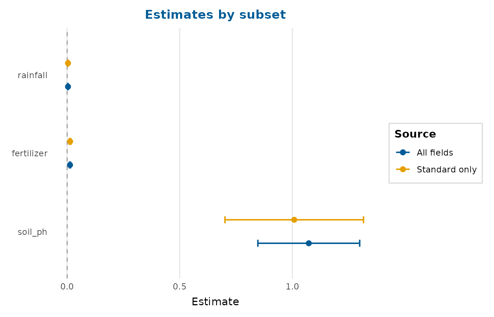
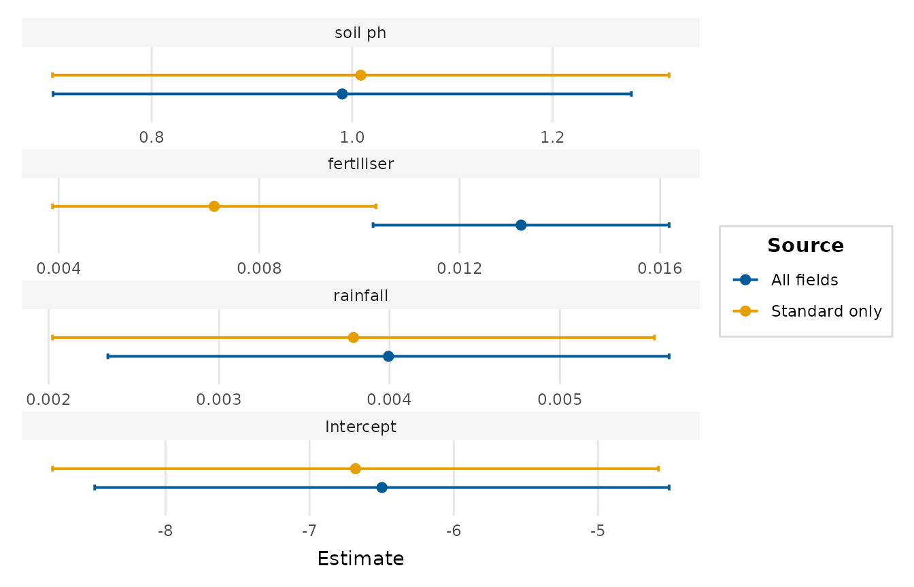

Overlays the estimates from two or more models (or tidy estimate tables) on a
single forest plot, with one colour per source. It is the general engine
behind frequentist_bayesian_plot() (frequentist against Bayesian), and
serves equally well for comparing nested models, several optimisers, or
estimates before and after a transformation.
Usage
compare_models(
...,
names = NULL,
conf_level = 0.95,
intercept = FALSE,
order = c("none", "ascending", "descending"),
labels = NULL,
interaction = c("times", "asterisk", "colon", "space"),
dodge_width = 0.6,
reference_line = 0,
palette = NULL,
point_size = 2.2,
line_size = 0.7,
facet = FALSE,
scales = c("fixed", "free"),
legend_title = "Source",
legend_ncol = 1,
title = NULL,
subtitle = NULL,
x_lab = "Estimate"
)Arguments
- ...
Two or more fitted models and/or tidy data frames of estimates. Name the arguments to label the sources (e.g.
compare_models(Frequentist = m1, Bayesian = m2)).- names
Optional character vector of source labels, overriding the names of
....- conf_level
Confidence/credible level for models.
- intercept
Whether to keep the intercept term. Defaults to
FALSE.- order
Order terms by their average estimate across sources:
"none","ascending"or"descending".- labels
Optional display labels (see
coefficient_plot()).- interaction
Passed to
format_terms().- dodge_width
Vertical spacing between sources sharing a term.
- reference_line
Position of a vertical reference line (
NAto omit).- palette
Colours for the sources; defaults to
depictr_palette().- point_size, line_size
Point and interval-line sizes.
- facet
Whether to give each term its own panel with a free x-axis, laid out one per row, so that terms on very different scales (for example a large intercept alongside small slopes) stay legible. The source overlay and its single legend are preserved within the faceted layout. Defaults to
FALSE. A convenience alias forscales = "free".- scales
Either
"fixed"(the default, a single shared x-axis) or"free"(one free-scaled panel per term). Whenfacet = TRUEthis is forced to"free".- legend_title, legend_ncol
Legend title and number of columns.
- title, subtitle, x_lab
Title, subtitle and x-axis label.
Value
A ggplot2::ggplot object.
Examples
m1 <- lm(yield ~ rainfall + fertiliser + soil_ph, data = crop_yield)
m2 <- lm(yield ~ rainfall + fertiliser + soil_ph,
data = crop_yield[crop_yield$treatment == "standard", ])
compare_models(`All fields` = m1, `Standard only` = m2,
title = "Estimates by subset")

# Keep the intercept legible alongside the slopes:
compare_models(`All fields` = m1, `Standard only` = m2,
intercept = TRUE, facet = TRUE)
